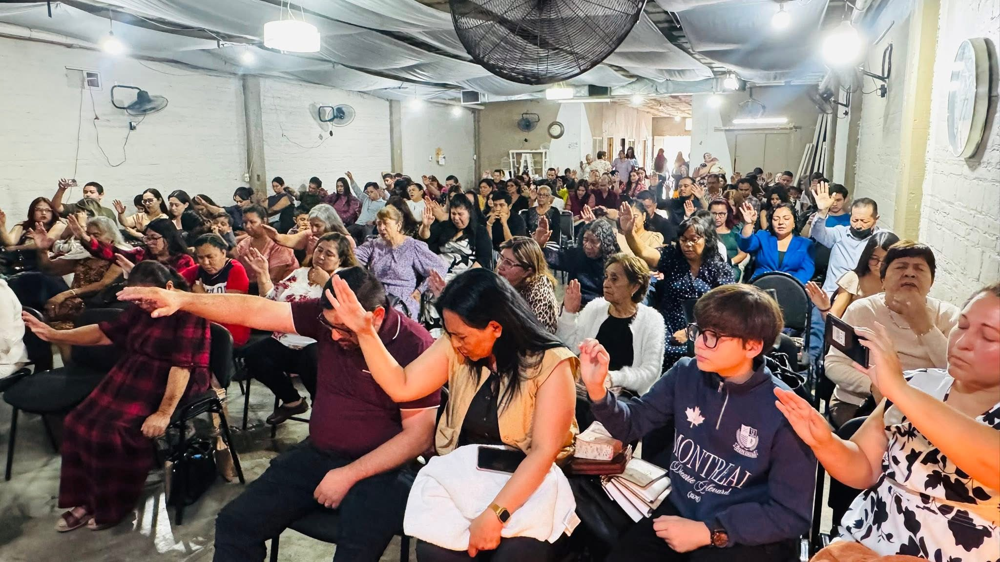

Nuestra misión
Compartir el mensaje de Jesucristo, formar discípulos y servir a nuestra comunidad con amor.
Un lugar donde encontrarás fe, esperanza y una familia que te recibe con los brazos abiertos.

Somos una comunidad cristiana que busca compartir el amor de Dios, fortalecer a las familias y llevar esperanza a quienes nos rodean.
Creemos en el valor de caminar juntos, crecer en la fe y servir con amor a nuestra comunidad.
¡Tú eres parte de nuestro gozo!Compartir el mensaje de Jesucristo, formar discípulos y servir a nuestra comunidad con amor.
Ser una iglesia que fortalezca familias y lleve esperanza a nuevas generaciones.
En Centro Cristiano Shalom hay un lugar para ti. Juntos servimos a Dios y compartimos su amor.
Sembrando la palabra de Dios en las nuevas generaciones.
Formando jóvenes firmes en la fe y con propósito.
Mujeres creciendo juntas en fe, amor y servicio.
Fortaleciendo hombres de fe y compromiso con Dios.
Exaltando el nombre de Dios por medio de la música.
Llevando esperanza, oración y consuelo a quienes lo necesitan.
Compartiendo un mensaje de fe y restauración.
Compartiendo la palabra de Dios a través de la radio.
Fortaleciendo la fe y la comunión en los hogares.
Edificando matrimonios sobre principios bíblicos.
Enseñanza de los principios básicos del cristianismo.
¡Te esperamos con los brazos abiertos! Ven y forma parte de nuestra familia.
Reunión de Damas y Varones
7:00 PMReunión Familiar
7:30 PMReunión de Jóvenes
5:00 PMReunión Familiar
11:00 AM 🔴 Transmisión por FacebookNo importa dónde te encuentres. Acompáñanos en nuestras transmisiones y comparte el mensaje de esperanza.
Únete a nuestra reunión familiar todos los domingos a las 11:00 AM.
Ver transmisión ↗Encuentra predicaciones, mensajes y contenido para fortalecer tu fe.
Visitar canal ↗✦ Compartiendo esperanza en cada transmisión ✦
Las puertas de Centro Cristiano Shalom están abiertas para ti y tu familia. ¡Tú eres parte de nuestro gozo!
Centro Cristiano Shalom
Av Hidalgo 1352, Zona Centro, 35000 Gómez Palacio, Dgo.
Cómo llegar ↗Domingos a las 11:00 AM
¡Te esperamos!